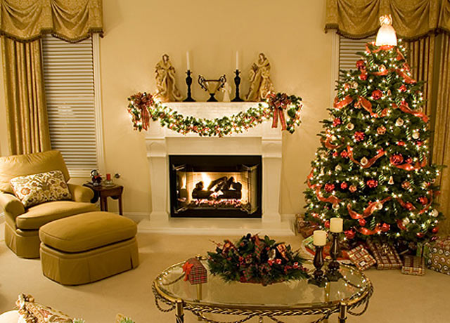
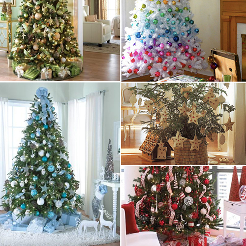
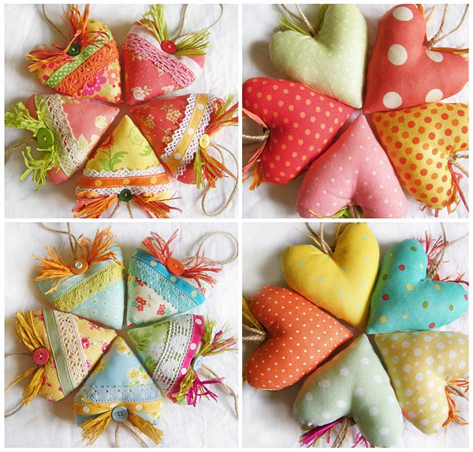
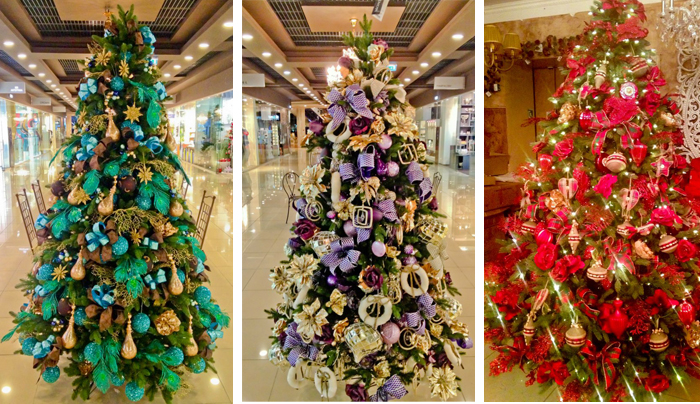
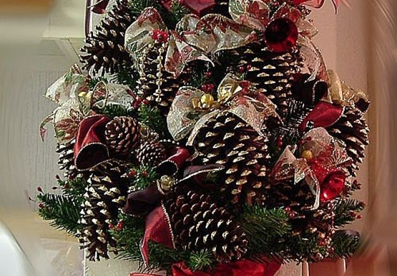
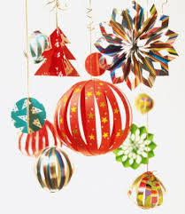
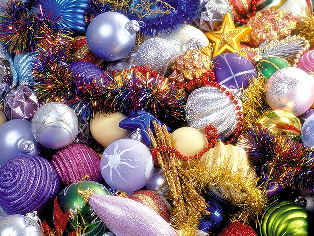
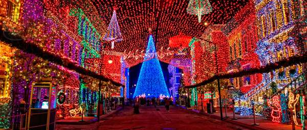

|
Зима, за вікном темно, тихо падає сніг… наближається Новий Рік, пора прикрашати новорічну ялинку. Що може бути приємнішим в один з тихих грудневих вечорів, як ”нарядити” її усією сім'єю? Щоб правильно прикрасити ялинку, зовсім не обов'язково мати величезну кількість шалено дорогих іграшок. Досить дотримуватися декількох основних правил, які допоможуть зробити по-справжньому чарівне святкове дерево навіть із звичайних недорогих прикрас.
Для цього ми дамо декілька порад:
- краще всього розпочинати новорічне оформлення ялинки з вибору загальної колірної гамми прикрас, що гармонує із забарвленням стін і меблів. Підбирайте прикраси не лише за принципом "сподобалося - не сподобалося", але і з урахуванням вибраного кольору. До речі, ви можете використати для новорічних ялинок монохромні прикраси, що є дуже цікавим рішенням. Наприклад, прекрасно буде виглядати темно-зелена ялинка з прикрасами тільки білого або тільки червоного кольору;

- під час оформлення новорічної ялинки можна відштовхуватися від принципу подібності або, навпаки, контрасту. Приклад застосування цього принципу подібності при новорічному оформленні ялинок (за формою) - використати схожі за формою і кольору прикраси, але двох розмірів - великі і маленькі. Приклад застосування принципу контрасту (за кольором) - прикраса новорічної ялинки темно-бардового кольору яскравими білими кулями. Існує нескінченна кількість варіантів застосування цих принципів на практиці. Експериментуйте, дайте волю своїй фантазії. Але, займаючись прикрасою новорічної ялинки, пам'ятайте, що оформлена ялинка не повинна виглядати надмірно яскравою;

- оформлення новорічної ялинки повинне проходити під девізом - "легкість і гармонійність". Прикраси новорічної ялинки не повинні бути надмірно великими, чіпляти важкі іграшки і намиста неприпустимо. При виборі розміру прикрас використайте принцип рівномірності. Ніколи не купуйте дуже великі іграшки для ялинок середнього і маленького розміру. Під час оформлення новорічної ялинки для будинку, краще використати делікатні кольори, адже Новий рік все ж миле домашнє свято, романтична казка. А ось новорічне оформлення ялинок для свята в офісі або в банкетному залі, може бути воістину феєричним по забарвленнях і контрастах;

- прикрашати новорічну ялинку краще не як "припаде", а в певному стилі. Виберіть стиль, в якому ви хочете прикрасити ялинку. Зрозуміло, що поєднання прикрас в стилі хай-тек з казковими будиночками і зайчиками "під старовину" - не кращий варіант;

- оформлення новорічної ялинки – творчий і особистий процес. Підбирайте ті прикраси, в яких ви можете розгледіти «душу», які здаються вам особливими, не схожими на інші. Ялинкові іграшки мають бути «живими», бажано уникнути покупки бездушних штампованих виробів промисловості;

- прикраси новорічних ялинок непогано доповнити великим муляжем подарунку, який кладеться під ялинку. Обов'язково задекоруйте триногу або горщик нарядною тканиною, можливо білою;

- «багато» не означає «добре». Прикраси новорічної ялинки суцільним непроникним килимом з іграшок не є ознакою хорошого тону. Іграшок не повинно бути дуже багато. Наряджайте свою ялинку так, щоб були добре видні гілки;

- декоративне підсвічування при оформленні новорічної ялинки не є обов'язковим. Якщо ви все-таки вирішили його використати, то лампочок не повинно бути дуже багато. Дроти бажано заховати в гущавині гілок. При виборі гірлянд не прагніть до максимальної кількості забарвлень ламп в гірлянді, а особливо до наявності контроллера, що відповідає за зміну режимів мерехтіння. На наш погляд краще всього виглядають монохромні гірлянди, що постійно світять, наприклад з білим спектром освітлення. Пам'ятаєте, що гірлянди вогненебезпечні – купуйте якісні вироби. Світлодіодні гірлянди є надійнішими і довговічнішими.

Коли все готово, запалюють ліхтарики, і в усіх блискучих іграшок на ялинці починають мерехтіти барвисті вогники. Зігріта домашнім теплом, ялинка виділяє м'який затишний аромат хвої, який створює прекрасний святковий настрій для всієї сім’ї і тоді настає справжнє свято – Новий Рік та Різдво Христове!
Але приходить час, коли після закінчення свят доводиться розбирати і викидати ялинку, що підсохла… та, як довше зберегти новорічне дерево? Для цього слід дотримуватись певних правил:
- купіть маленьке хвойне (вічнозелене) дерево, що росте в горщику. При купівлі дерева віддайте перевагу тому, яке росте в горщику, чим зрізане. Зростаюче дерево з неушкодженою кореневою системою надалі матиме більше шансів для росту в саду;
- дайте дереву можливість адаптуватися до кімнатної температури. У зимові місяці дерево знаходиться в стані спокою. У теплій вітальні воно легше перейде в літній стан. Зробіть те ж саме, перш ніж винести дерево на вулицю після свят;
- виберіть найхолодніше місце у будинку і дайте посадженій ялинці можливість постояти в кімнаті впродовж максимум десяти днів;
- потурбуйтеся, щоб коренева система не пересохла. Регулярно поливайте дерево через день і щодня обприскуйте хвою.
Отож, приємних свят! З Новим Роком! З Різдвом Христовим! |